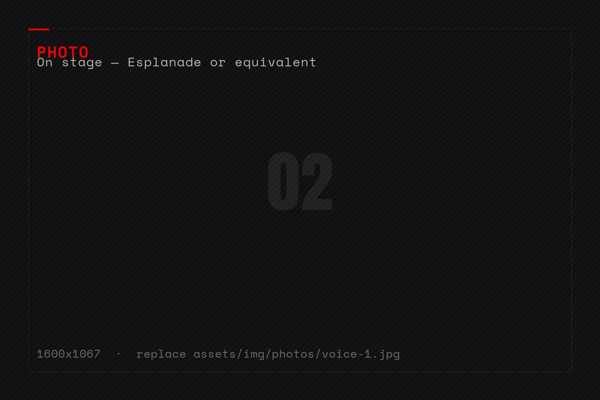
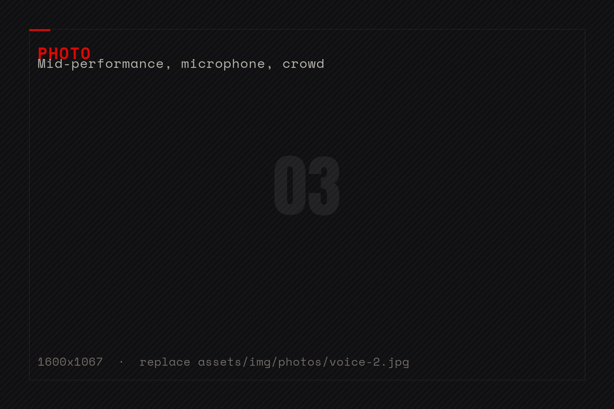
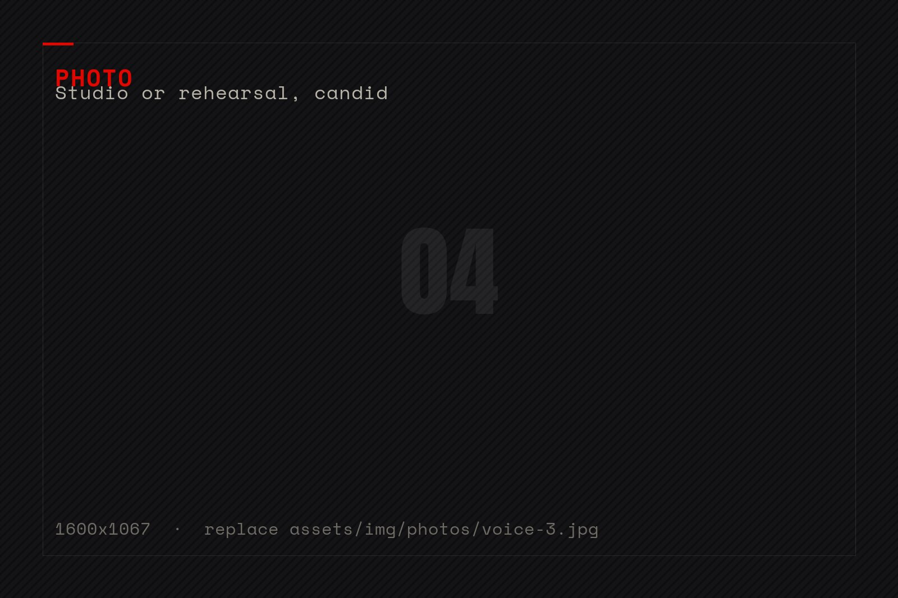

I don't learn a language and then sing it. I sing it first and understand it later.
That method carried me from Brazilian jazz clubs to the biggest stage in Singapore.
Both open on YouTube — nothing is loaded from YouTube while you are on this page.
The setlist of a life
/02 — WORLD TOUR, UNPLANNED
2013
South Brazil — the awakening
Moved to South Brazil and was discovered by renowned Brazilian singer Adriana Deffenti, who pushed her onto the stage.
She honed her voice in clubs alongside Italian jazz pianist Giordanno Barbieri, moving from Brazilian pop to folk music — and began recording.
Porto Alegre · BRAsia tour
With The Platters' James Sampson
James Edward Robert Sampson of the legendary The Platters invited her to join his Asia project.
Together they performed across Malaysia and Thailand — “a huge, pivotal moment in my life,” she says, and the door to the whole continent.
Kuala Lumpur · BangkokJakarta years
Indonesia — the star years
Living in Indonesia, she sang for a living and became genuinely famous there. Her energetic stage presence and powerful voice —
plus a height that towered over local stages — made her an attraction in her own right.
Jakarta · ID2015
Singapore — the Esplanade, twice
Moved to Singapore in 2015 and performed for the biggest brands — Aston Martin, Maserati, Sofitel, Ritz-Carlton — at showcases,
grand celebrations and Chinese weddings. She performed her own original songs on the Esplanade, Singapore's biggest stage,
on two consecutive nights.
Esplanade · SGUSA leg
Chicago & the States
The tour carried across the Atlantic: high-end celebrations and stages in the USA — including Chicago —
where the multilingual setlist turned every room into a small United Nations with a backbeat.
Chicago · USEurope
London & the home continent
Performances across London and Europe, a guest star turn on German TV's “Sag die Wahrheit” — introduced as
“Ramona, the Bond girl” — and songs sung in Mandarin, Japanese, Malay and Korean wherever the stage called.
London · UK

01 · On stage

02 · Mid-performance

03 · In the studio
Aston MartinMaseratiSofitelRitz-CarltonEsplanadeThe PlattersAston MartinMaseratiSofitelRitz-CarltonEsplanadeThe Platters
One voice, fifty tongues
/03 — SUNG, NOT JUST SPOKEN
“My way of learning is that I first learn songs in a language, and only later the meaning.
I sing before I even understand what I'm singing about. I can sing in 50 languages — of course I can't speak all of them
fluently. But I still have time.”
That ear-first method made her setlist borderless: Mandarin for Chinese weddings in Singapore, Japanese and Korean for
Asian showcases, Malay and Indonesian for the years she lived there, Portuguese from Brazil, Norwegian from guiding in the fjords.
“Not every language sounds beautiful when spoken. But every language is beautiful when sung.”
Ramona Irgolič
A sample of the repertoire
EnglishSlovenianGermanMandarinJapaneseKoreanMalayIndonesianPortugueseSpanishItalianFrenchNorwegianCroatianKiswahiliRussianTurkishDutchSwedishCatalan… + 30 more
Current dream: record songs in 40 languages with a friend.
Her energetic stage-presence and strong voice leaves the audience with great impression and enthusiasm.
— The Wedding Music Company, Singapore
01 / 03
Booking a singer who fits any room?
Weddings, brand showcases, festivals, private celebrations — in whichever language your guests speak.